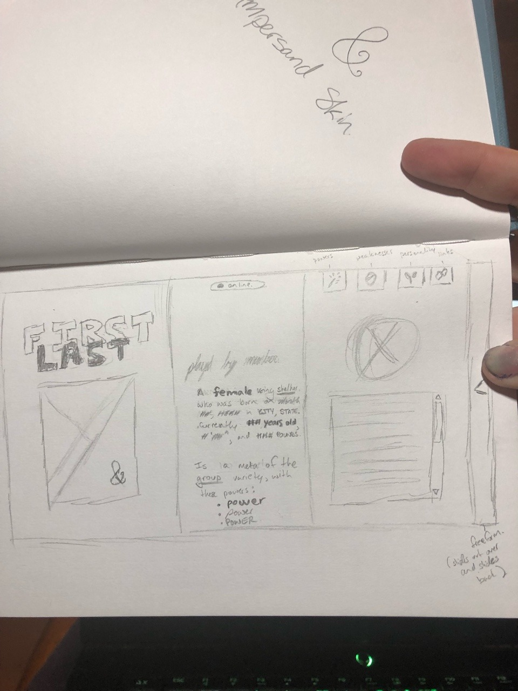
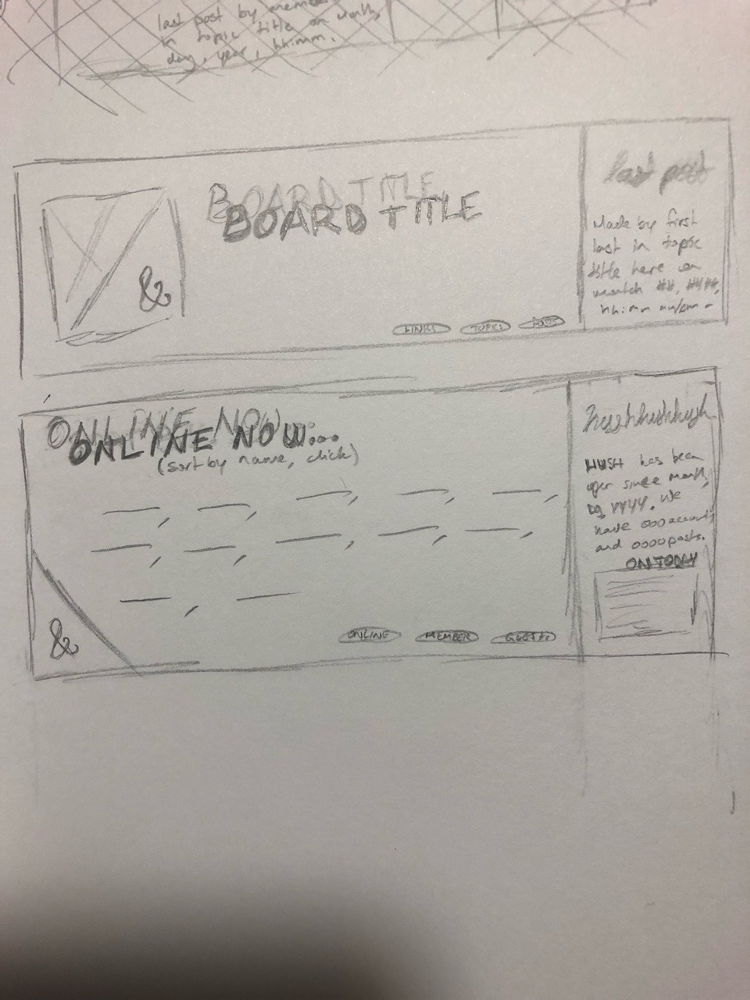
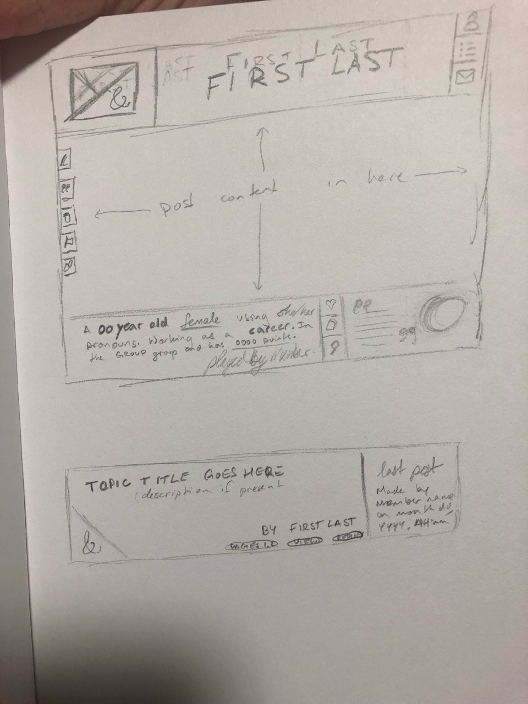

Love the Adrenaline — Summer 2019
A forum skin for a writing site hosted on the JCink forum host. Completed in May 2019. Site is currently live but closed, so the skin can be viewed (with restrictions) here.
Requirements
- Character profiles located in the account's main profile
- A set of matching posting templates
- Genre-specific information — specifically, stats bars that change in size relative to the overall stat count
- Templates used for storing a variety of information out of character, including claims lists and competition results for multiple disciplines at multiple levels
Features
- Skin accents change color based on member group of the viewer
- Profile, post row, and template accents change color based on the associated account
- Stylized checkboxes for staff use
- Sidebar with toggle to slide in and out; toggle state remembered by localStorage memory
Ideation


